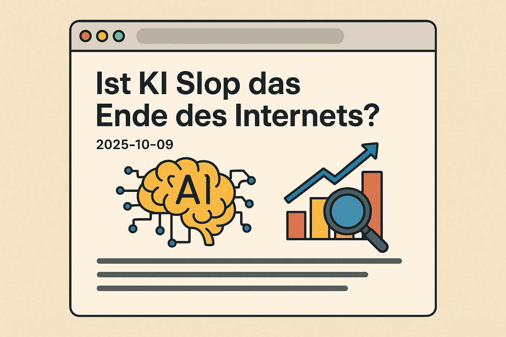

Table of Contents

KI wird das Internet und das Web, so wie wir es kennen, verändern. Gar keine Frage. Gerade geistert die Ankündigung des “KI Modus” von Google durch die Gazetten [ mehr ]. Google erntet dabei viel Kritik. Aber vielleicht kann der KI Modus auch etwas Gutes bewirken, weil das für eine fundamentale Neuausrichtung steht? Eine These!
Der Rückblick
Erinnert ihr euch noch, als Publisher vor über 10 Jahren auf die Barrikaden gingen, ob der Google Snippets? Das Problem, ganz kurz umrissen: Wenn Google in den Suchergebnissen die Informationen von Webseiten so zusammenfasst, dass die NutzerInnen die Webseite nicht mehr besuchen müssen, nagt das am Geschäftsmodell der Publisher. Keine BesucherInnen, keine Werbeeinnahmen. Blöd ist das vor allem für professionellen Journalismus, machen wir uns nichts vor. Ich werde aber auch nicht müde, auf meine Kritik zu verweisen , denn die ganze Chose hat das Internet nachhaltig verändert. Das Problem aus Sicht der Nutzer: Click-bait, SEO-Content, Bullshit-Artikel. Tracker-Bloat. Die Qualität der Inhalte hat massiv gelitten.
Die Entwicklung
Mit dem Siegeszug von KI - böse Zungen nennen es eine Sau, die durch das Dorf getrieben wird - erreicht das Problem eine neue Eskalationsstufe. Den Anfang machte vor vielen Monden schon Perplexity AI, mit einer besseren Version einer Suchmaschine - einer “Antwortmaschine”! Zahlreiche Agenten - Gemini, ChatGPT, Grok, Copilot - schlossen auf und verbesserten das Sucherlebnis massiv. Wenn ich jetzt wissen will, wie man Quinoa kocht, musss ich mich nicht durch dröfzig Sucherergebnisse und ellenlagen Textwüsten quälen, die mir die kulturellen Hintergründe von Quinoa erklären und mir über Affilate-Links erst noch komplette Küchen, kupferne Kochtöpfe und Holzlöffel aus Agarholz verkaufen wollen. Ich bekomme die Antwort in fünf Stichpunkten, vorgelesen. Keine Banner. Keine Werbung. Nur Fakten.
Der Status Quo
Diese Form der Suche wird sich unweigerlich durchsetzen und damit am Geschäftsmodell vieler Publisher sägen. SEO wird sich nicht mehr lohnen, das Schlagwort der Stunde heißt nun GEO (Generative Engine Optimisation) aka AI-O aka LLM-O aka irgendwas-mit-KI-O. Bei SEO ging es um Monokratie, höchstens noch Polikratie. Nur wer in den Suchergebnissen ganz oben stand, gewann. Bei GEO ist das nicht ganz so einfach. Hier geht es um Konsens, um Plausibilität und Vertrauen. Es geht um Fakten, nicht Geschwafel oder aktualisierte Timestamps, die Relevanz und Regelmäßigkeit vortäuschen sollen. Und selbst wenn ich es in die Antwort eines Chat-Bots schaffe, ist immer noch nicht klar, ob die NutzerIn auch die Quelle zur Antwort besucht (wenn diese überhaupt angegeben wird). Aus Sicht der Publisher: Eine Katastrophe.
Der Ausblick
Und das wird zu einer Abkehr von Geschäftsmodellen führen, die auf SEO, Affiliate- oder Display Marketing angewiesen waren. Und damit wird sich das Internet in zwei Lager spalten:
Auf der einen Seite das offene Web, ähnlich dem vor 30 Jahren, in dem EnthusiastInnen, BloggerInnen, Nischen-Communities und SpezialistInnen ihr Wissen teilen. Auf selbstgehosteten Seiten, ohne größeres kommerzielles Interesse. Aus Spaß an der Freude. Publisher werden hier nur noch mit der minimal nötigen Präsenz vertreten sein, um auch für KI relevant zu bleiben, ohne jedoch zu viel Preis zu geben. Bloggen ist im KI-Zeitalter wichtiger ist als je zuvor !
Auf der anderen Seite das “Walled Garden Web”. Plattformen hinter Paywalls, Social Media Plattformen mit ihren endlosen Feeds, die dann im KI-Slop ersaufen. Finanziert durch Abonnements, Werbung aber auch durch den Verkauf von Daten.
Das Ende des Internets?
Ich gebe zu, diese These hat Schwächen. Aber ist die Vorstellung wirklich so naiv? Lockt ein derart “bereinigtes” Web kommerzielle Anbieter an, da es sich ja im Prinzip um eine grüne Wiese ohne Wettbewerb handelt? Oder werden gerade die davon abgehalten, weil die Suchmaschinen keinen Traffic mehr liefern?
Der Gedanke ist schön. Lasst uns einen Moment darin sonnen.
So Leute, Forza ist fertig.
Zusammenfassung
Der Beitrag analysiert, wie KI-basierte Suchmaschinen und Antwortsysteme das Internet und die Geschäftsmodelle von Publishern verändern. SEO verliert an Bedeutung, GEO und Konsens werden wichtiger. Das Web spaltet sich in offene Wissensseiten und kommerzielle Walled Gardens. Die Zukunft des Internets bleibt offen, aber KI sorgt für einen grundlegenden Wandel.
Hauptthemen: KI Internet Web Suchmaschinen Google SEO GEO GEO-O Generative Engine Optimization
Schwierigkeitsgrad: Einfach
Lesezeit: ca. 5 Minuten